Los mobs pasivos en Minecraft han evolucionado significativamente desde las primeras versiones del juego. Introducidos inicialmente en la Alpha (2009) con animales básicos como vacas, cerdos, ovejas y pollos, su propósito inicial era proporcionar recursos esenciales como alimento y materiales. En la Beta 1.8 (2011), se añadió el sistema de cría, haciendo que los jugadores gestionaran a los animales para obtener recursos de manera sostenible. Con el tiempo, actualizaciones importantes como la 1.6 (2013) trajeron caballos y burros para el transporte, mientras que en la 1.14 (2019), animales como zorros, pandas y abejas dieron vida a los biomas, aportando mecánicas únicas como polinización y producción de miel. Además, mobs como las tortugas introdujeron la interacción con el entorno, como la puesta de huevos y la obtención de caparazones. Hoy en día, los mobs pasivos no solo son fuentes de recursos, sinod también elementos que enriquecen el realismo y dinamismo del mundo, reflejando la evolución constante de Minecraft hacia una experiencia más viva e interactiva.
| 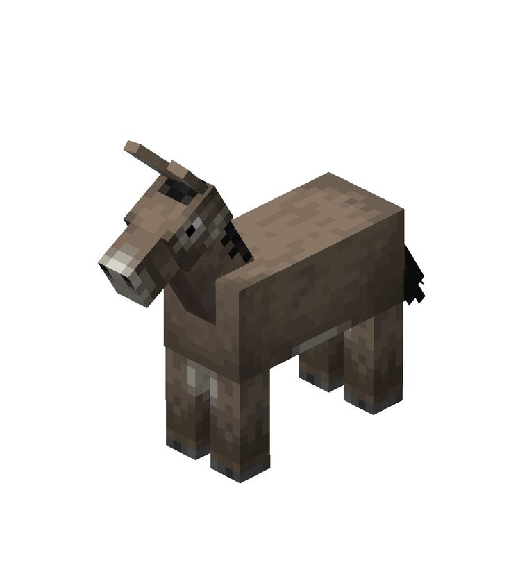 | 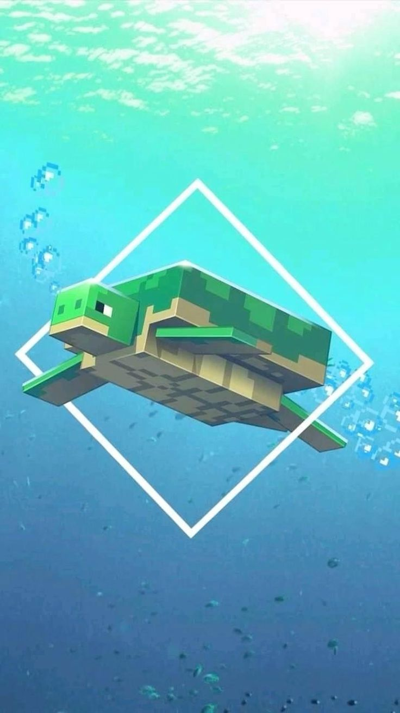 | 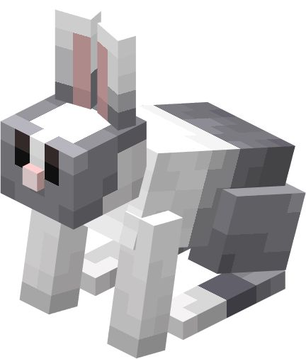 | 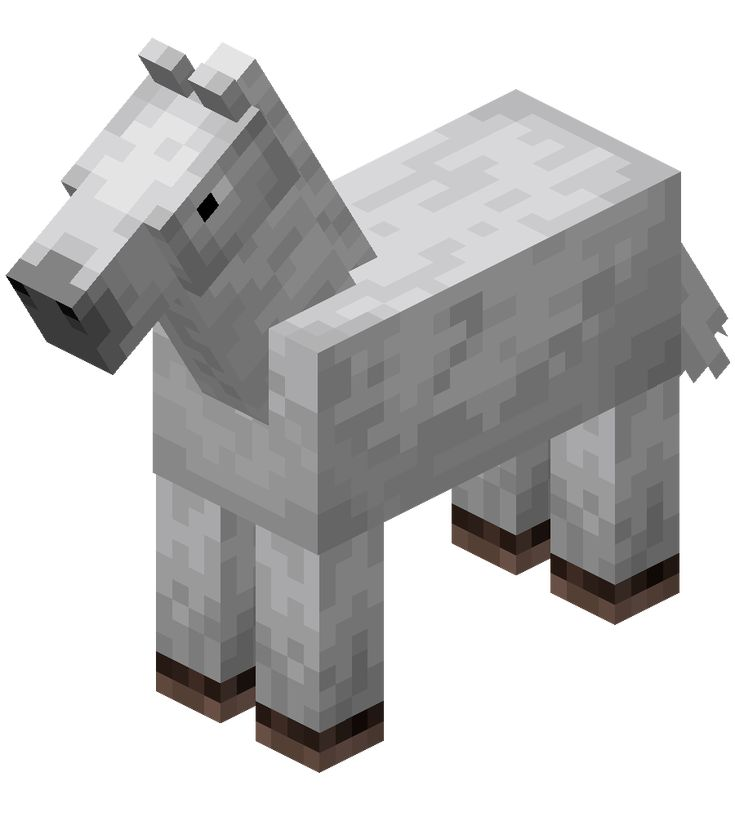 |
| Similar al caballo, el burro es domesticable, pero puede llevar cofres para transportar objetos adicionales. Es ideal para la exploración con carga. Utilidad: Transporte y almacenamiento. | Las tortugas aparecen en biomas de playa. Al reproducirse, dejan huevos que, al eclosionar, dan crías que sueltan escamas al crecer. Estas escamas son usadas para fabricar caparazones. Utilidad: Fabricación de cascos y cría en playas. | Los conejos son animales pasivos que aparecen en biomas de desierto, taiga y llanuras. Al morir, sueltan piel de conejo, carne de conejo y patas de conejo. Utilidad: Ingredientes para pociones y alimento. | Los caballos se encuentran en biomas de llanuras. Pueden ser domesticados y montados usando una silla de montar, lo que los convierte en un medio de transporte eficiente. Utilidad: Transporte y cría para obtener diferentes variantes. |
| 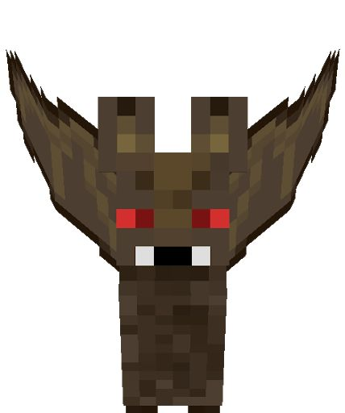 | |
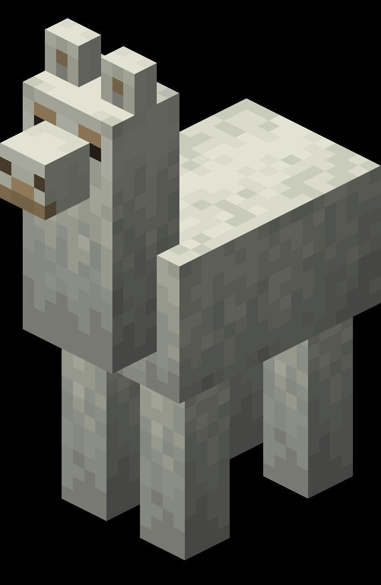 | 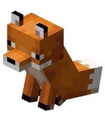 |
| Los murciélagos son criaturas pasivas que habitan en cuevas oscuras. Aunque no sueltan recursos ni interactúan con los jugadores, sirven como ambientación en el juego. Utilidad: Ambientación en biomas subterráneos. | Las abejas son animales pasivos que se encuentran cerca de árboles con colmenas. Pueden ser usadas para producir miel y panales. Son pacíficas hasta ser provocadas. Utilidad: Miel, cera y polinización de cultivos. | Las llamas se encuentran en biomas de montañas y sabanas. Pueden ser domesticadas y equipadas con cofres. También escupen para defenderse. Utilidad: Transporte de carga y defensa menor | Los zorros son animales pasivos y escurridizos que habitan en los biomas de taiga. Suelen llevar objetos pequeños en la boca. Pueden ser domesticados indirectamente mediante cría. Utilidad: Aportan un comportamiento único en el juego. |
| 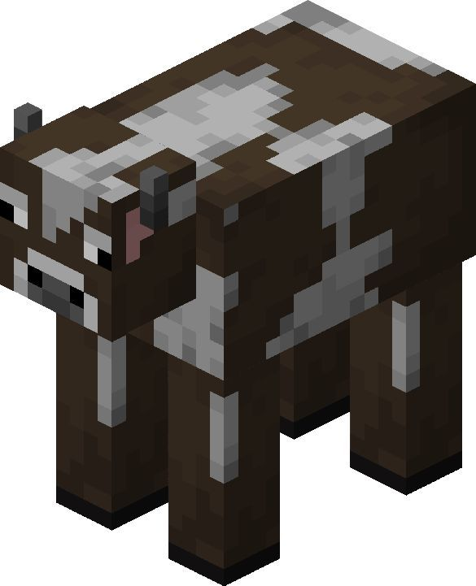 | 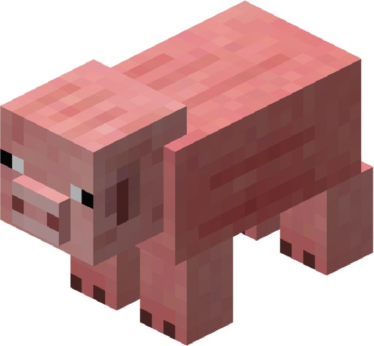 | 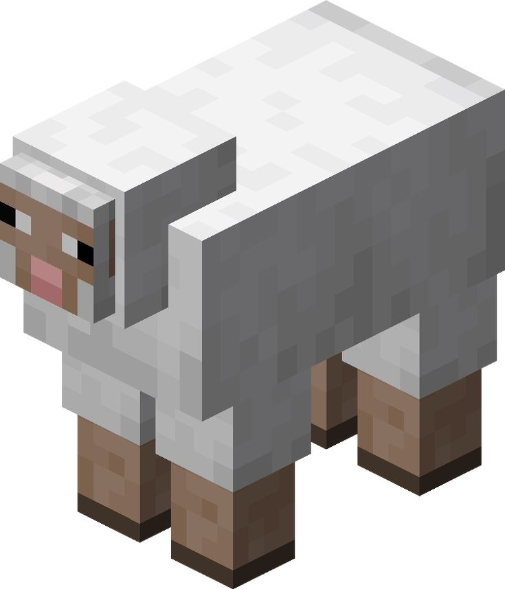 | 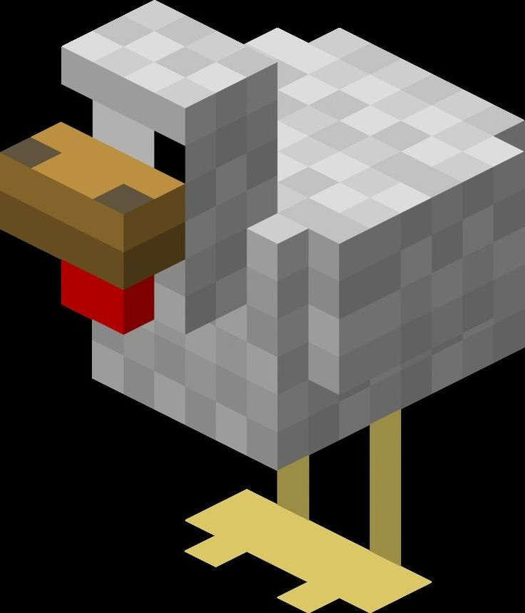 |
| Es un animal pasivo que se encuentra comúnmente en los biomas de llanuras y bosques. Las vacas proporcionan cuero, carne cruda y leche al ordeñarlas con un cubo. Utilidad: Ordeñar, criar, y obtener recursos básicos. | Los cerdos son animales pasivos que suelen aparecer en llanuras y colinas. Pueden ser montados usando una silla de montar y una caña de pescar con zanahoria. Al morir, proporcionan chuletas de cerdo crudas. Utilidad: Transporte y alimento. | Las ovejas aparecen en varios biomas y se caracterizan por su lana, que puede ser esquilada con tijeras. Al ser matadas, proporcionan lana y carne cruda. Utilidad: Producir lana y carne. | Los pollos son pequeños animales pasivos que sueltan plumas y proporcionan carne de pollo cruda. Además, ponen huevos de forma periódica. Utilidad: Alimento, plumas y cría rápida. |
 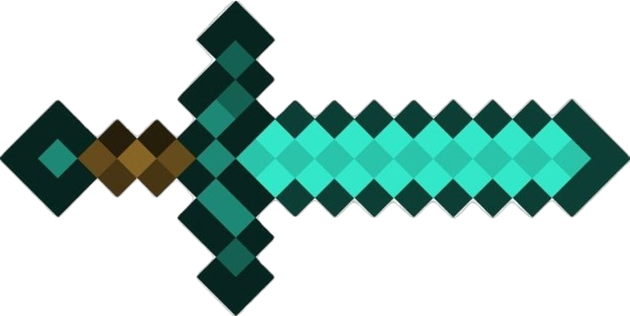
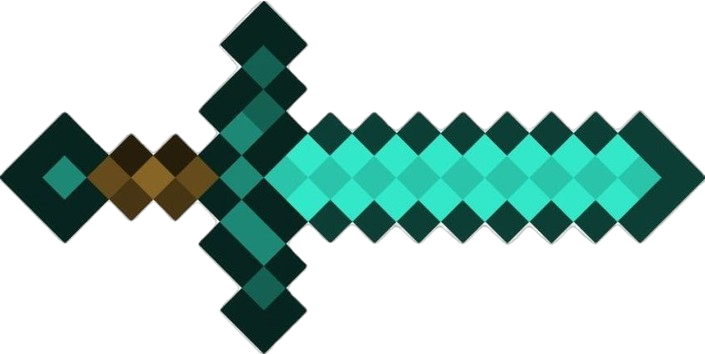
Anterior --------------Siguiente